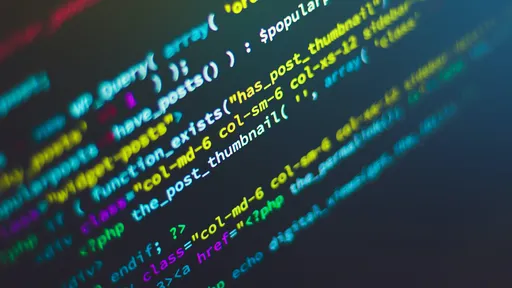
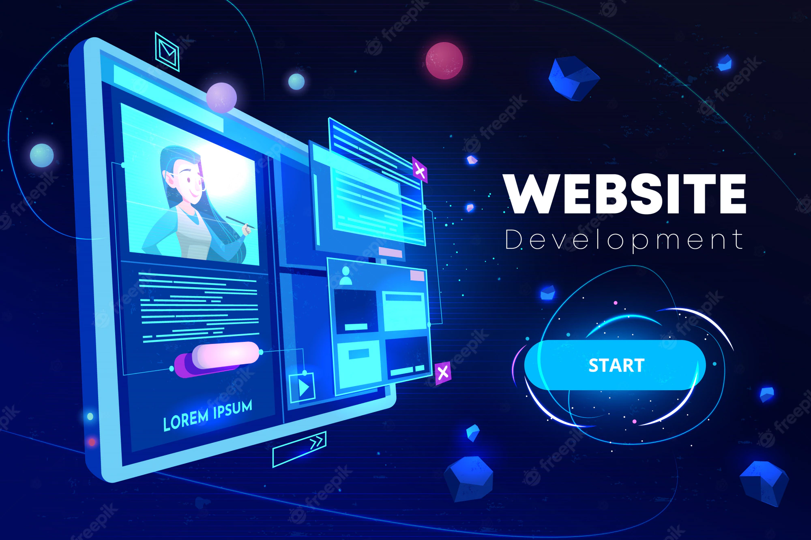
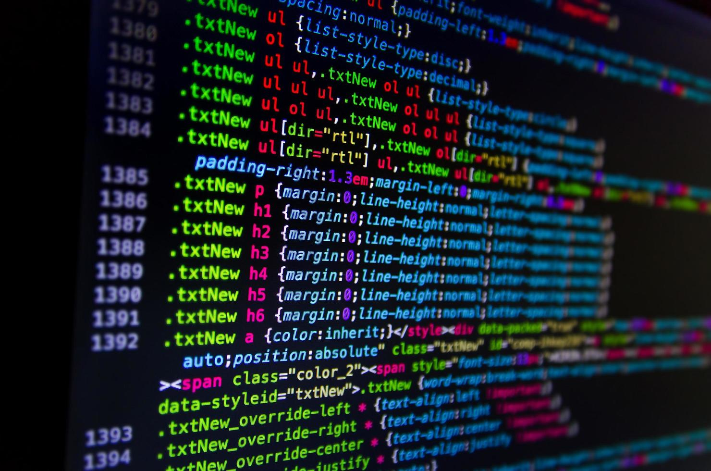

Tecnologia da Informação
18 de Abril de 2022
A área de Tecnologia da Informação (TI) é uma das mais promissoras
em um mercado de trabalho cada vez mais concorrido. Este é um setor estratégico para qualquer
empresa, pois está envolvido nas ações para melhorar a produtividade e a eficiência dos negócios.
Muito se fala sobre aquela turma que mexe nos computadores, são chamados de programadores ou
desenvolvedores,
mas você sabe de fato o que faz um profissional de TI?
Em um passado recente, para chamar um táxi era necessário ligar para uma central de atendimento ou
encontrar um carro que passava pela rua. O mesmo acontecia com operações bancárias,pois sempre tínhamos
que ir à agência para resolver os problemas. Estes e outros problemas foram solucionados com o avanço
da tecnologia, foi a onda dos computadores.
Este avanço tecnológico fez surgir uma série de novas áreas profissionais, tais como:Programação,
Segurança da Informação,Redes,Análise de Sistemas e Suporte técnico.
Cada profissional atua em uma área específica dentro da área de Tecnologia da Informação. Este setor
absorve alunos formados em cursos como Ciência da Computação, Análise e Desenvolvimento de
Sistemas e
Engenharia
da Computação.
Postado por Roger Gabriel
Programador: o que é e o que faz ?
18 de Abril de 2022 Programador, ou desenvolvedor, é o profissional responsável pela criação,
desenvolvimento e
automação de sistemas, apps e qualquer outra função que abrange a área da Tecnologia e Informação(TI).Em
um mundo
cada vez mais conectado, as carreiras na área de tecnologia estão em grande crescimento. Dentre elas,
programador
é uma das que mais cresce, com demandas em empresas de todas as áreas.
Sabe aquele jogo de celular que ajuda a passar o tempo enquanto você espera numa fila? Ou aquele
aplicativo
que te ajuda a acompanhar suas finanças, sistemas bancários como a NUBANK por exemplo? Ou
navegador e
esse site que vc está lendo?
Todos eles só existem graças a um programador!
Postado por Roger Gabriel
As 6 principais áreas na programação
18 de Abril de 2022 
Postado por Roger Gabriel
1°- Desenvolvimento Web
18 de Abril de 2022 
Desenvolvimento Web é a área da tecnologia responsável pela criação
de sites, aplicativos, softwares e bancos de dados que compõem a internet como vemos hoje. Essa área
é subdividida em 3 categorias: Desenvolvimento Front-End , Desenvolvimento Back-End e
FullStack
O desenvolvedor, ou programador Front-End é o que fica responsável pela parte visual, design e a
estrutura de um site,ou seja, é ele quem
desenvolve a interface que está diretamente ligada com a interação do cliente e usuário final, sabe
quando vc entra num site e vê o painel
de cadastro e login? Então, esse é o desenvolvedor responsável por esse sistema.
O programador Back-End é o profissional responsável pela parte de trás de um site ou aplicação,
daquilo que o cliente não vê,
ele está
diretamente ligado no processo de banco de dados, sendo assim, possibilitando a operação do sistema.
O desenvolvedor FullStack é o profissional que consegue atuar tanto no Front-End, como
também no
Back-End, sendo assim, podemos dizer que um programador FullStack geralmente é um profissional
que consegue fazer um sistema, ou uma aplicação completa .
Postado por Roger Gabriel
2°- Desenvolvimento Mobile
18 de Abril de 2022
Programador Mobile é especializado em criar aplicados para
smartphones, tablets e qualquer
dispositivo móvel, pode ser para Android,IOS ou qualquer outro dispositivo móvel . Executa a
manutenção dos
sistemas, fazendo
eventuais correções necessárias, visando atender às necessidades dos usuários. Desenvolve trabalhos
de montagem, depuração e
testes de programas, executando serviços de manutenção nos programas já desenvolvidos.
Postado por Roger Gabriel
3°- Desenvolvedor Desktop
18 de Abril de 2022 A programação desktop tem o objetivo de criar aplicações executáveis no computador. Com o conhecimento em programas necessários para o desenvolvimento de aplicações dos mais diversos tipos e funcionalidades, o programador desktop tem um mercado de trabalho altamente abrangente. Ele é responsável por aplicar sistemas internos que se relacionam em apenas uma máquina ou em uma rede específica de computadores, isso dentro de um sistema operacional como macOS, Linux ou Windows.
Postado por Roger Gabriel
4°- Inteligência Artificial e Machine Learning
18 de Abril de 2022
Inteligência Artificial (IA),é um termo criado em 1956 em uma
conferência no campus da Dartmouth
College, em New Hampshire,
nos Estados Unidos, foi proposto por McCarthy, Marvin Minsky, Nathaniel Rochester e Claude
Shannon. Representa o
ramo da Ciência da Computação que busca criar resoluções para que máquinas possam receber
dados e realizar a tomada de
decisão a partir de sua própria interpretação – imitando o comportamento humano – por meio
de algoritmos de aprendizagem
e generalização que simulam as capacidades humanas.
Machine Learning (ou Aprendizado de Máquina, em português), é uma subdivisão da IA
que tem
como objetivo estudar os processos
e programações necessários para fazer com que as máquinas passem pelo processo de
aprendizado e realizem uma curva de aprendizado
semelhante à humana. Em outras palavras, basicamente significa aprender por meio de
experiências.
Postado por Roger Gabriel
5°- Desenvolvimento de Games
18 de Abril de 2022
Esta provavelmente é a carreira mais “hardcore” na área de desenvolvimento de jogos. Este profissional é o responsável por programar a base do jogo, ou seja a física e as mecânicas do jogo. Por este motivo a área de estudo de Ciências da Computação é extremamente desejada mas não é um requisito indispensável.
Postado por Roger Gabriel
6°- Ciência de Dados
18 de Abril de 2022
A Ciência de Dados ou Data Science, como
também é conhecida no mercado, é um campo
que possui diferentes disciplinas no dia a dia, como a programação, lógica,
matemática e estatística, a fim de organizar
e filtrar um grande número de informações da melhor forma para uma empresa.
Todos os dias, infinitos dados são disponibilizados na internet. São diferentes
formatos, arquivos,
origens e conteúdos que, juntos, formam um grande e crescente volume de informações
que necessitam
de profissionais capacitados para processar, organizar e deixar tudo que for
relevante para os negócios.
Sendo assim, no dia a dia, o cientista de dados precisará compreender diferentes
conteúdos,
construindo probabilidades e gerando previsões para que um negócio prospere.
Postado por Roger Gabriel